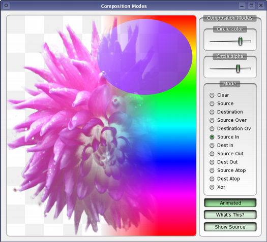

Composition Modes
Demonstrates how Composition Modes work in QPainter.

The two most common forms of composition are Source and SourceOver. Source is used to draw opaque objects onto a paint device. In this mode, each pixel in the source replaces the corresponding pixel in the destination. In SourceOver composition mode, the source object is transparent and is drawn on top of the destination.
In addition to these standard modes, Qt defines the complete set of composition modes as defined by X. Porter and Y. Duff. See the QPainter documentation for details.